Create, edit, and manage blog posts with rich content, metadata, and media attachments
Feature Priority
Top
UI Location
Content > Publisher > New Post or Edit Post
Test Date
January 6, 2026
Tester
Automated Test (Claude Code)
Test Summary
Total Tests
Passed
Failed
Pass Rate
9
9
0
100%
Test 1: Create New Post with Title and Body
Status:PASS
Description: Verify that a new blog post can be created with title and body content.
Steps Taken:
Navigated to News page with Publisher module
Clicked "Create Post" button
Entered title: "Test Post Creation - Automated Testing 2026"
Entered body content describing the test
Clicked Save button
Verified post was saved successfully
Evidence:
Create post form with content entered:
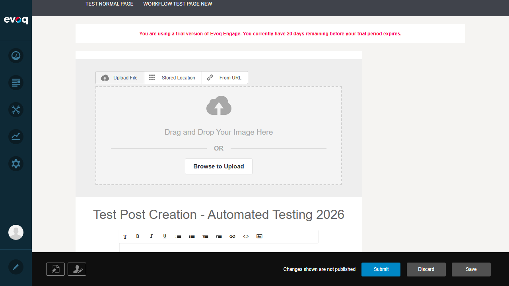
Post displayed after creation:
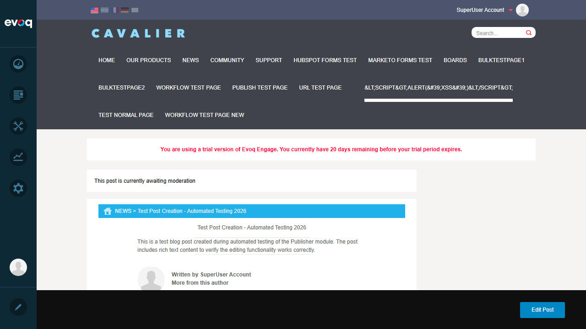
Test 2: Slug Auto-Generation from Title
Status:PASS
Description: Verify that the URL slug is automatically generated from the post title.
Steps Taken:
Created a new post with title "Test Post Creation - Automated Testing 2026"
Observed the URL/Slug field in Edit Post Details panel
Verified slug was auto-generated as "Test-Post-Creation-Automated-Testing-2026"
Evidence:
The Edit Post Details panel shows the auto-generated slug matching the title with hyphens replacing spaces:
Result: The URL field automatically populated with "Test-Post-Creation-Automated-Testing-2026" based on the title.
Test 3: Edit Existing Post Content
Status:PASS
Description: Verify that existing post content can be modified and saved.
Steps Taken:
Navigated to existing post "Test Post Creation - Automated Testing 2026"
Clicked "Edit Post" button
Modified title to "Test Post Creation - EDITED VERSION"
Clicked Save button
Verified "Post Saved Successfully" message appeared
Confirmed edited title displayed on post view page
Evidence:
Edit form with modified title:
Post view showing edited title:
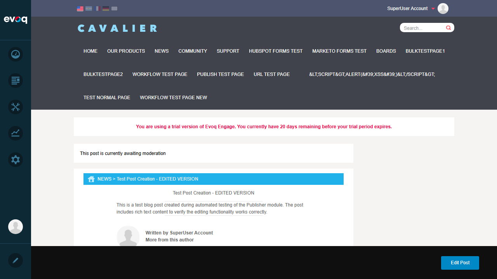
Test 4: Add Main Image to Post
Status:PASS
Description: Verify that a main/featured image can be added to a post.
Steps Taken:
Opened post in edit mode
Clicked on "Stored Location" tab in image upload area
Selected "test_image" from available assets
Clicked "Insert Image" to add the image
Clicked Save to persist the change
Verified image appears in post view
Evidence:
Image picker showing available assets:
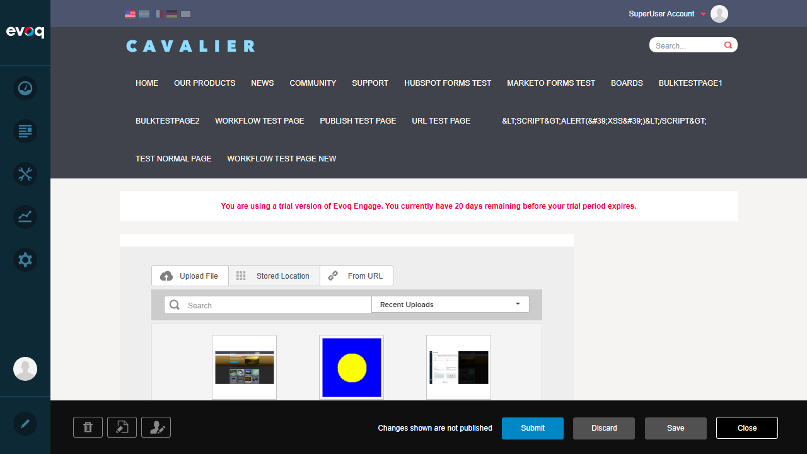
Image inserted in edit form:
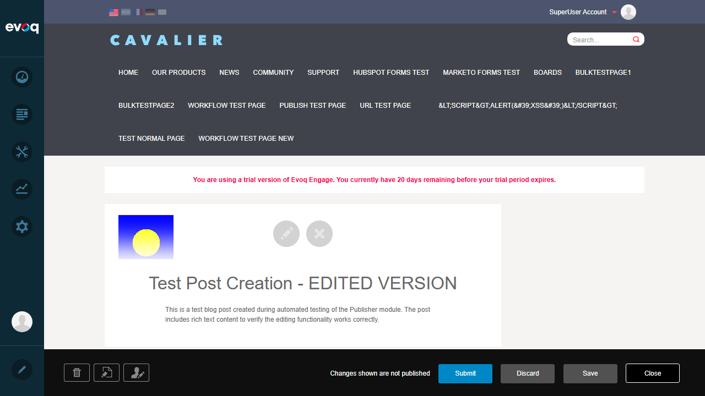
Post view with main image displayed:
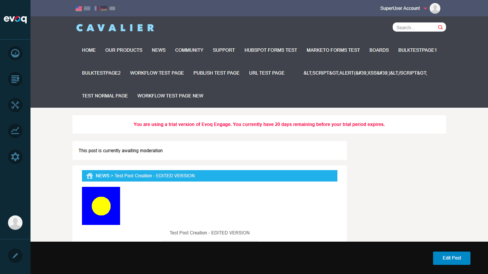
Test 5: Validate Required Fields - Title
Status:PASS
Description: Verify that the title field is required and validation error appears when empty.
Steps Taken:
Navigated to Create Post page
Left title field empty
Clicked Publish button
Observed validation error message
Evidence:
Empty form before validation attempt:
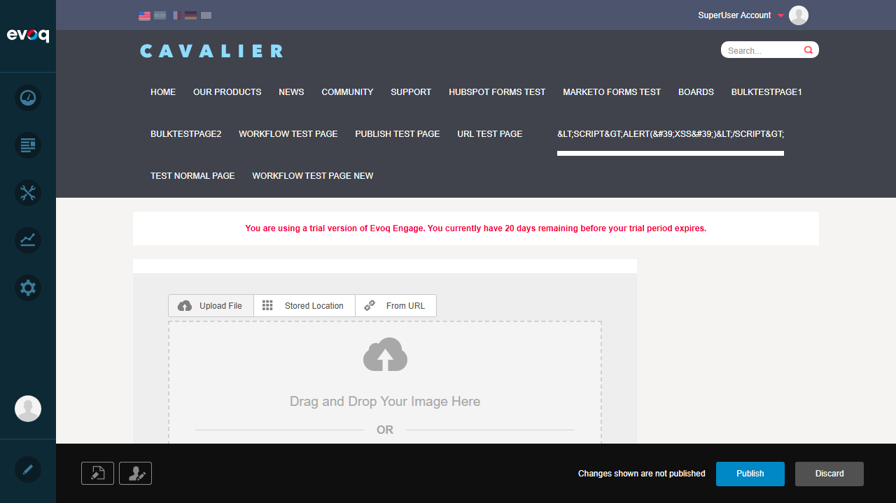
Result: System displayed validation message: "A title is required"
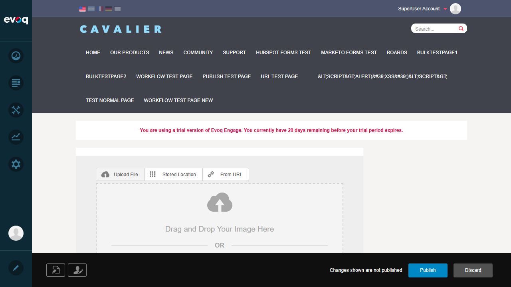
Test 6: Validate Required Fields - Body
Status:PASS
Description: Verify that the body field is required and validation error appears when empty.
Steps Taken:
Entered title "Test Title Only - No Body Content"
Left body content empty
Clicked Publish button
Observed validation error message
Evidence:
Form with title but no body:
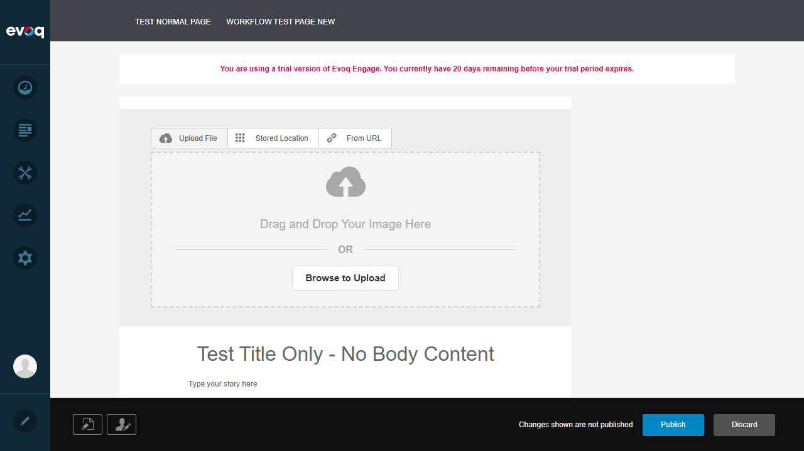
Result: System displayed validation message: "The text of the story is required"
Test 7: Metadata Fields Auto-Population
Status:PASS
Description: Verify that metadata fields (Title, Description) are properly managed.
Steps Taken:
Opened existing post in edit mode
Observed the Edit Post Details panel
Verified Title field contains post title
Verified Description field auto-populated from body content
Confirmed URL field contains auto-generated slug
Evidence:
Edit Post Details panel showing metadata fields:
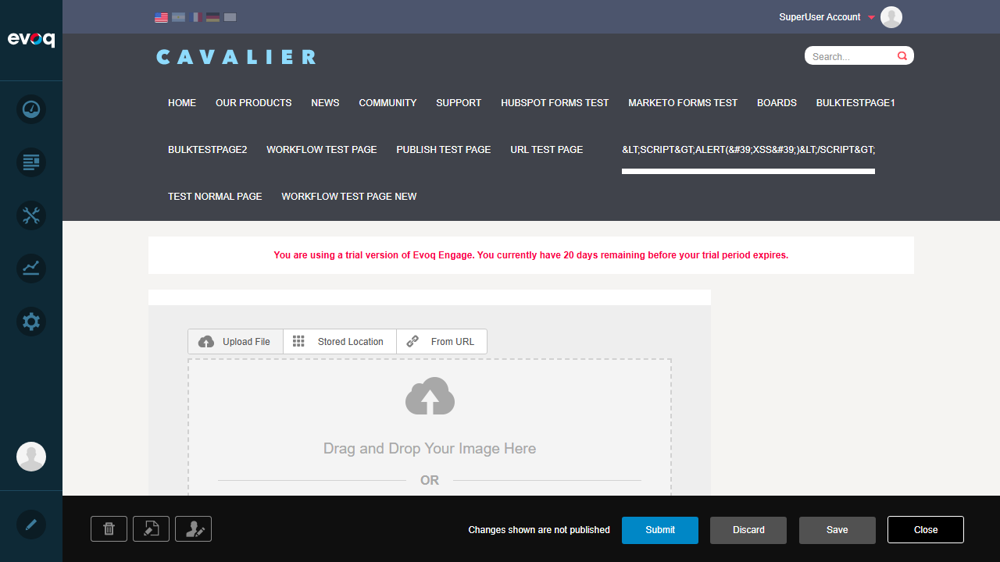
Result: The Description field was automatically populated with the first portion of the body content. Required fields are marked with asterisks (Title *, URL *).
Test 8: Cancel/Discard Editing Without Saving
Status:PASS
Description: Verify that changes can be discarded without saving.
Steps Taken:
Opened post in edit mode
Modified title to "DISCARD TEST - This Should Not Be Saved"
Clicked Discard button
Entered discard message when prompted
Confirmed discard action
Verified "Post Discarded Successfully" message
Evidence:
Form with unsaved changes:
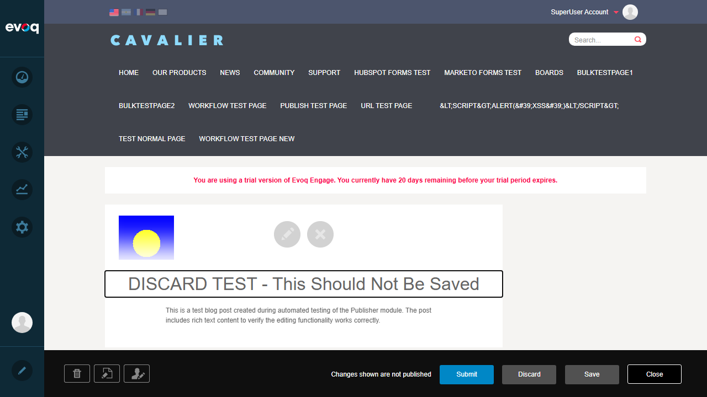
Discard confirmation dialog:
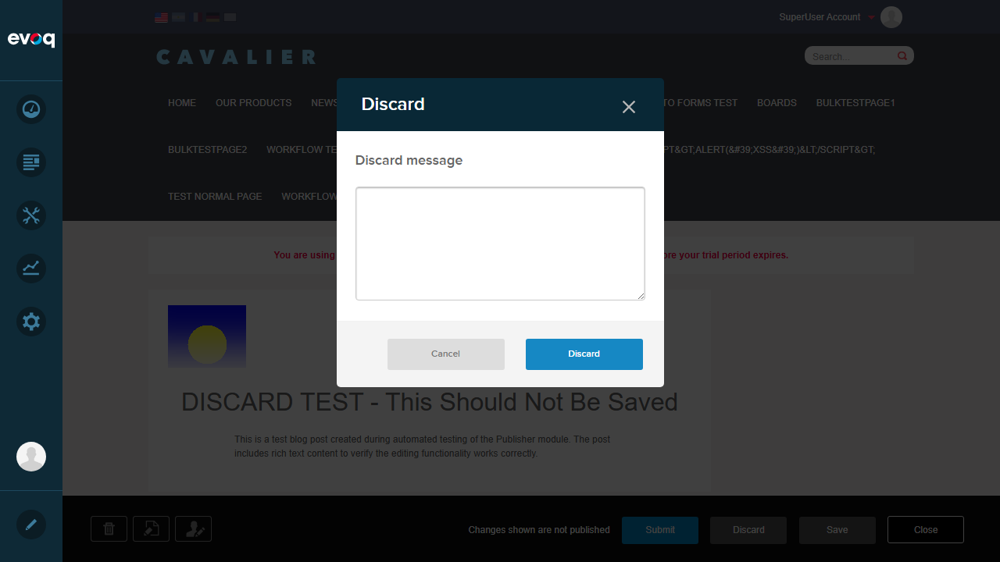
Result: The discard functionality successfully removed the draft post. A "Post Discarded Successfully" confirmation was displayed.
Test 9: Required Fields UI Indicators
Status:PASS
Description: Verify that required fields are properly marked in the UI.
Steps Taken:
Opened post creation/edit form
Observed the Edit Post Details panel
Verified required fields are marked with asterisks (*)
Evidence:
The Edit Post Details panel clearly shows:
Title * - marked as required
URL * - marked as required
Description - not marked (optional)
Tags - not marked (optional)
Featured checkbox - optional
Observations
Workflow Integration: Posts go through a workflow (Content Approval) before publishing. The "Direct Publish" workflow allows immediate publishing.
Discard Behavior: Discarding a draft post removes it entirely from the unpublished posts list. A discard message/reason is required.
Auto-Save: Based on code review, auto-save draft functionality exists in the system settings, though the specific auto-save interval testing was not performed in this session.
HTML Sanitization: The code review showed that PostManager.cs uses PortalSecurity.InputFilter with NoScripting and NoMarkup options for title sanitization, protecting against XSS attacks.
Multi-language Support: The Publisher module supports multiple languages (English, Spanish, French, German, Arabic) as evidenced by language flags in the UI.
Author Management: The system supports changing post authors through the "Post Author" panel in the edit interface.
Social Sharing: Posts can be shared to Twitter, Facebook, LinkedIn, and Pinterest based on the sharing options visible in the UI.